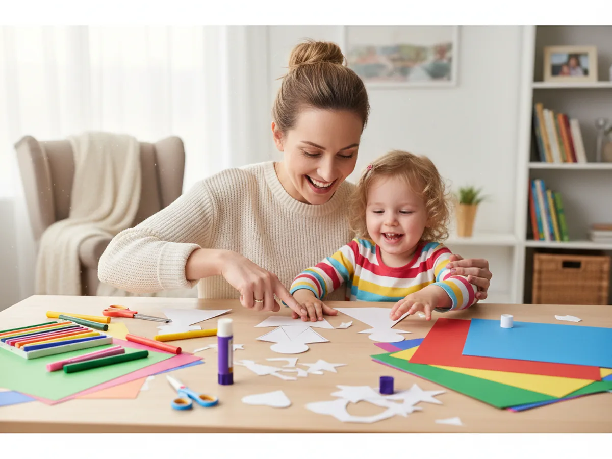
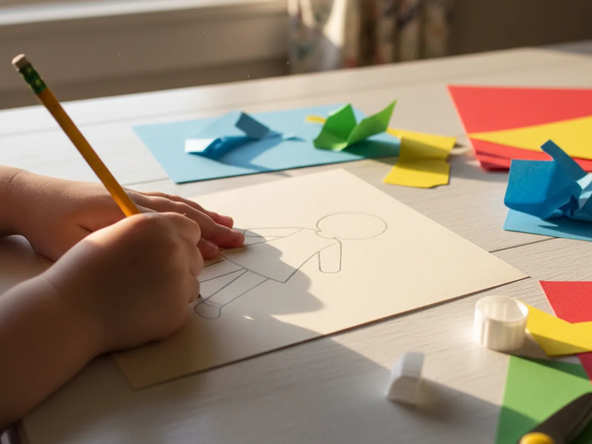
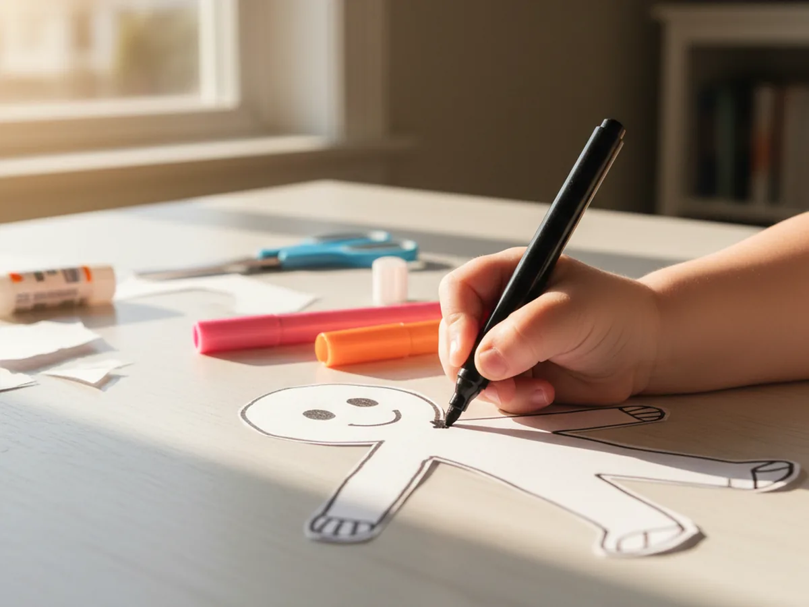
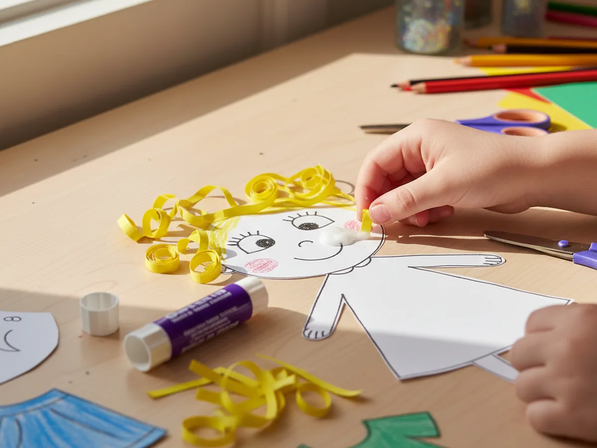
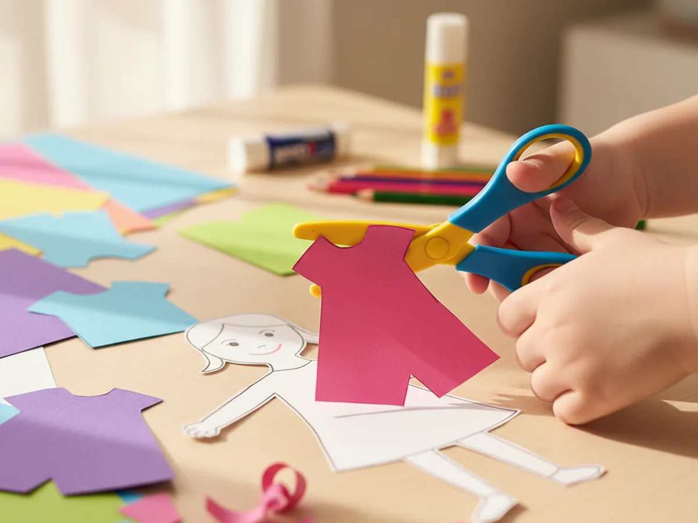
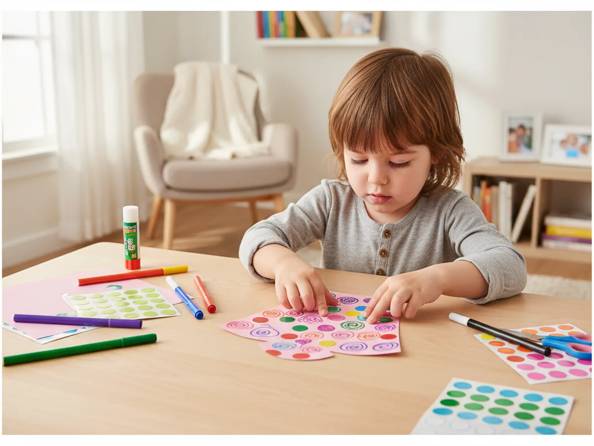
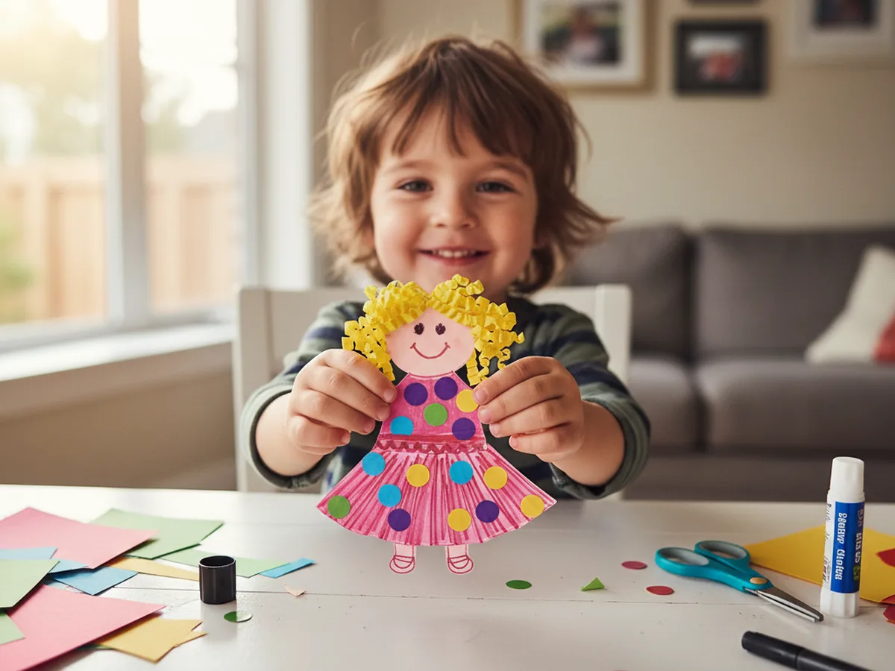

There is something wonderfully timeless about a paper doll. Children have been cutting them out and dressing them for generations, and for good reason. This paper doll craft is one of those projects that feels magical the moment the pieces come together. All it takes is a stack of construction paper, a pair of scissors, some markers, and about 30 minutes of relaxed crafting time with your little one.
The best part is that there are no rules. Every child's paper doll ends up completely different because every child brings their own ideas to the table. This is the kind of activity that leads to real conversation, genuine creative choices, and a finished result your child will want to carry around and play with for the rest of the day. 🎀
Why Kids Love This Craft
Paper dolls tap into something deeply natural in young children: the desire to create characters and bring them to life. Unlike passive play, making a paper doll craft from scratch gives children a sense of real authorship. They chose the hair color. They picked the outfit. They drew the face. That level of creative ownership is incredibly motivating for kids of all ages.
For younger children aged 3 to 5, the cutting and gluing steps build fine motor strength while the drawing steps support early pencil grip and hand control. For older kids aged 6 and up, the craft opens up into endless storytelling possibilities. Once the doll is finished, they can cut additional outfits, give the doll a name, or create a whole paper family.
From a mom's perspective, this craft is a genuine win. It uses simple supplies you likely already have at home, creates very little mess, and keeps children engaged long after the crafting itself is done. The finished paper doll often becomes a treasured toy rather than something that gets tossed aside.

What You'll Need
Here is everything you will need to make your paper doll craft. Lay it all out before you begin so the activity stays smooth and fun from start to finish.
- Crayola Construction Paper, 480 sheets in 10 assorted colors, the main material for the doll body, hair, and clothing.
- Huhuhero Kids Safety Scissors, blunt tip, 4-pack, spring-action and safe for small hands.
- Elmer's All Purpose School Glue Sticks, 30-count, washable and easy for children to control.
- Crayola Ultra Clean Washable Markers, 40-count, perfect for drawing the doll's face and decorating the clothing.
- Crayola Crayons, 24 colors, great for coloring in large clothing shapes with softer, blended tones.
- A pencil, for tracing the doll shape before cutting.
- Small stickers (optional), for decorating the clothing with dots, hearts, or stars.
Step-by-Step Instructions
Take your time with each step and let your child lead where they can. There is no wrong way to make a paper doll craft, and the little imperfections are what make it feel truly handmade.
Step 1: Trace and Cut Out the Doll Body
Start by drawing a simple doll body shape on a sheet of light-colored or skin-tone construction paper. You do not need to be an artist here. A rounded head, a rectangular torso, two arm shapes, and two leg shapes will do beautifully. Draw the whole figure at once in pencil, aiming for a doll about 20 to 25 centimeters tall. Then cut carefully along the outline. If your child is 3 or 4, you may want to do the cutting while they watch or help hold the paper steady. Kids aged 5 and up can usually manage the cutting themselves with rounded safety scissors.

Step 2: Draw the Face
Lay the cut-out doll body flat on the table and invite your child to draw a face. A washable black marker works best for the outlines. Two simple dot eyes, a small curved mouth, and a little circle nose are all you need for a sweet, friendly expression. Encourage your child to add rosy cheeks using a pink marker or pink crayon. There is no need to aim for perfection here. The fact that a little hand drew it is exactly what makes the finished paper doll so charming. Slightly uneven eyes and a wobbly smile are part of the magic.

Step 3: Add Paper Strip Hair
Cut several thin strips of construction paper in a hair color your child chooses. Yellow for blonde, brown, black, or even red or purple for a more imaginative doll. Each strip should be about the width of your finger and roughly 10 to 15 centimeters long. To make the hair look curly, wrap each strip tightly around a pencil, then slide it off and let it spring into a soft curl. Run a glue stick along one end of each curl and press them gently onto the top and sides of the doll's head. For straight hair, simply glue the flat strips side by side across the top of the head. Let your child arrange the hair however they like. This step always produces adorable results. 🌟

Step 4: Cut Out the Paper Clothing
Now for the step children always get the most excited about: designing the outfit. Choose a brightly colored sheet of construction paper and help your child draw a simple dress or shirt shape. A dress can be as simple as a wide triangle with a small rectangular top. A shirt and pants combination works just as well. The key is to make the clothing shapes slightly larger than the doll's body so they overlap generously and stay in place when glued. Cut the shapes out together and hold them up against the doll to see how they fit before moving on to decoration.

Step 5: Decorate the Clothing
Before gluing the outfit onto the doll, let your child decorate it to their heart's content. This is the most open-ended and joyful step of the whole paper doll craft. Crayons can fill large areas with smooth, bold color. Markers can add fine details like buttons, bows, pockets, or polka dots. Small sticker dots look like cheerful confetti scattered across a dress. There are no wrong choices here. Encourage your child to think about what their paper doll character loves to wear. A princess gown? A superhero costume? A favorite color combination? Let them decide and watch their confidence grow with every creative choice.

Step 6: Dress the Doll and Finish
Run a glue stick over the back of the decorated clothing pieces and press them firmly onto the doll's body. Smooth them down gently and hold for a moment while the glue takes. If you made shoes from a small strip of folded brown or black paper, glue those to the bottoms of the legs as a finishing touch. Step back and look at what you two built together from a plain sheet of paper. This is your very own paper doll craft, completely unique and made with real care. Let it dry flat for a few minutes, then it is ready to play with, display, or give away as a handmade gift. ✨

Variations to Try
Whole Paper Doll Family: Make multiple dolls in different sizes to represent every member of the family, including pets. Younger children especially love recognizing themselves and their siblings in a row of handmade paper dolls. Display the family together on a windowsill or bulletin board for a sweet keepsake.
Wardrobe Dress-Up Set: Instead of gluing the clothing permanently, cut out two or three different outfits and use small loops of tape on the back so the clothes can be swapped on and off. This turns the finished paper doll craft into an ongoing imaginative play toy that children come back to again and again.
Storybook Character Doll: Base the doll on a favorite book character. If your child loves a specific princess, fairy, or adventurer from a picture book, use that character's colors and outfit details as inspiration. Talking about the story while crafting makes the activity feel even more meaningful and gives natural context for the design choices.
Final Thoughts
A paper doll craft is one of those beautiful activities that asks very little of you as a parent but gives back so much. No special materials, no complicated steps, no messy cleanup. Just a calm afternoon, a stack of colorful paper, and a child who gets to feel like a real creator. The doll they make will feel genuinely theirs because it is.
These are the small, unhurried moments that stick. Long after the paper doll is tucked away in a memory box, your child will remember sitting next to you and building something from scratch. Happy crafting! ✂️
More Crafts You'll Love
If you enjoyed this paper doll project, these other paper crafts are just as easy and just as fun to make together: